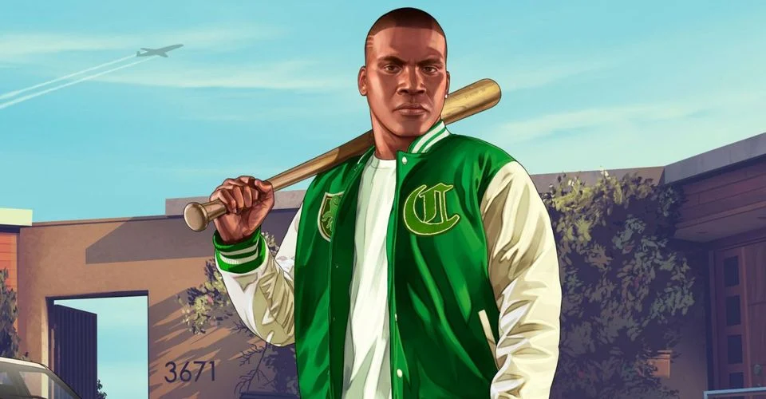
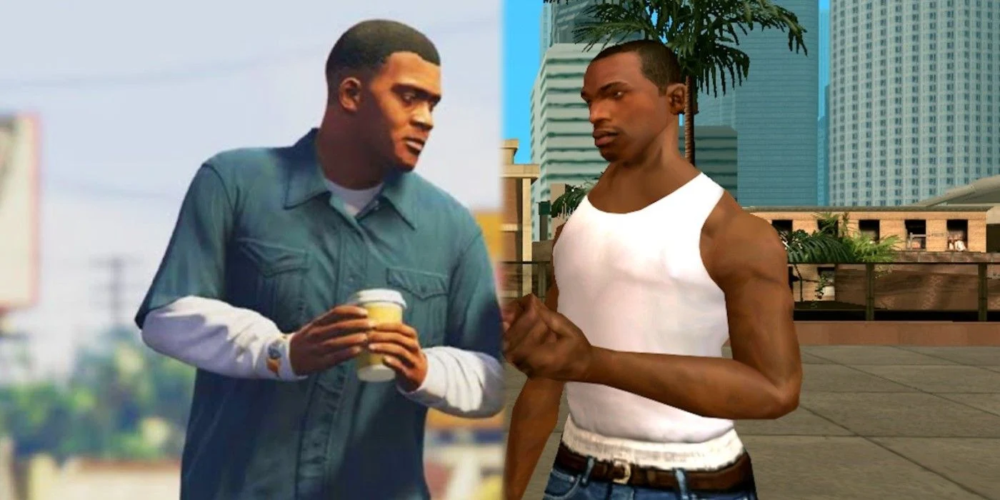
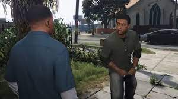
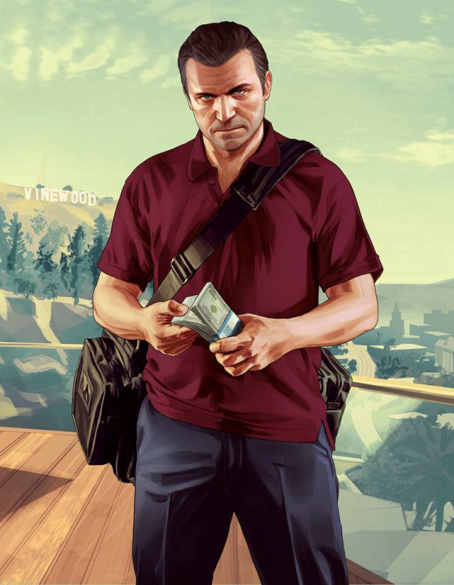
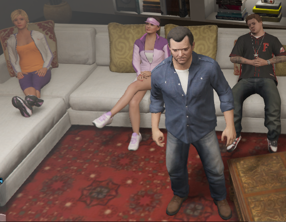
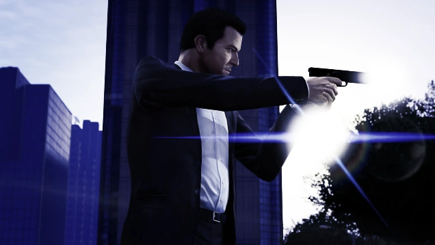
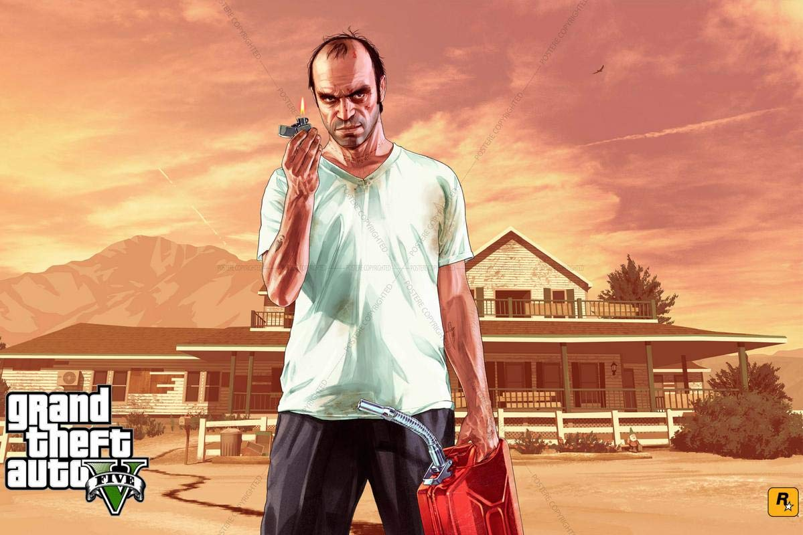
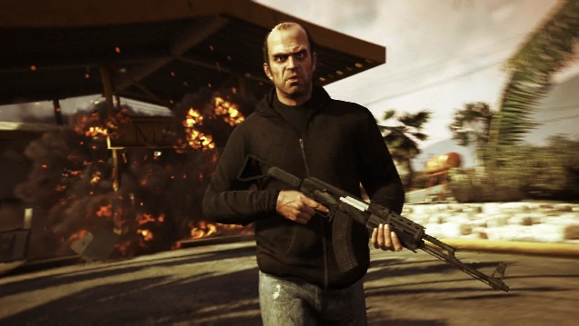

Grand Theft Auto 5 is an action-adventure game from 2013. As part of the GTA series,
it grants users to roam around San Andreas, while completing heists and completing side missions.
THe three main chracters include gangster Franklin, bank robber Michael, and arms trafficer Trevor.
All these characters have unique abiltities and personalities which makes them the top Characters in
the game.









Franklin Clinton is one of the favorites from the GTA series. A gangster like CJ from older title, trying to make a name for himself in San Andreas, are
characters that gamers love to play with. Living in Los Santos, players can commit illegal challenges to collect XP and money. His best friend is Lamar,
who is often credited for "roasting" Franklin for hanging out together in one scence. Franklin's special abilty is driving focus, taking full speed turns while landing
vehicles with ease.
Michael De Santa is a former bank robber with a family in Los Santos. His ability to perform strategic heists got him the life he has now.
Usually, he's seen with stacks of money in a bag, a bulletproof vest, and a tailored suit. His special abilty is Area Kill, in which users can activate to slow down time
take down enemies with excellenct markmanship.
Trevor Phillips is one of the more troubled characters from the game. He has behavior issues as a kid which then showed up
to bite him in the present as gamers play with him. Joining the Canadian Air Force didn't do the trick so gathering guns and commiting theft with
Michael de Santos was his pasttime. GTA 5 tries to show how lives can get turned around. Since Trevor is an alcoholic, users can his special abilty of Red Mist to remain
invincible from enemy damage or fall damage. Trevor is menace yet he cares for his team, which makes him a favorite in the series.